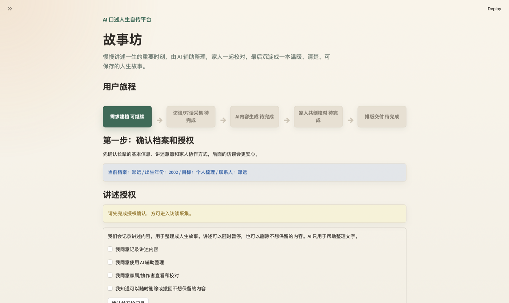
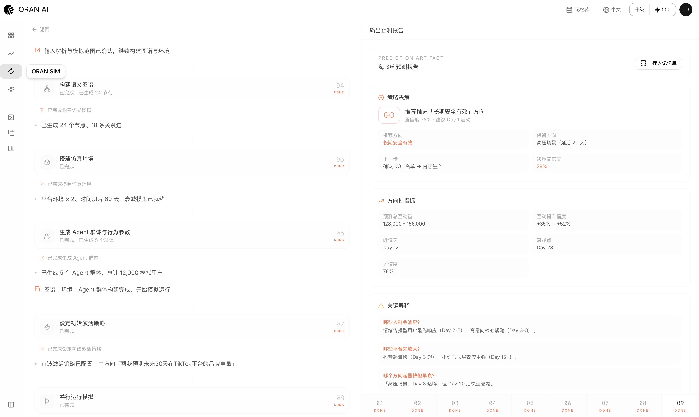
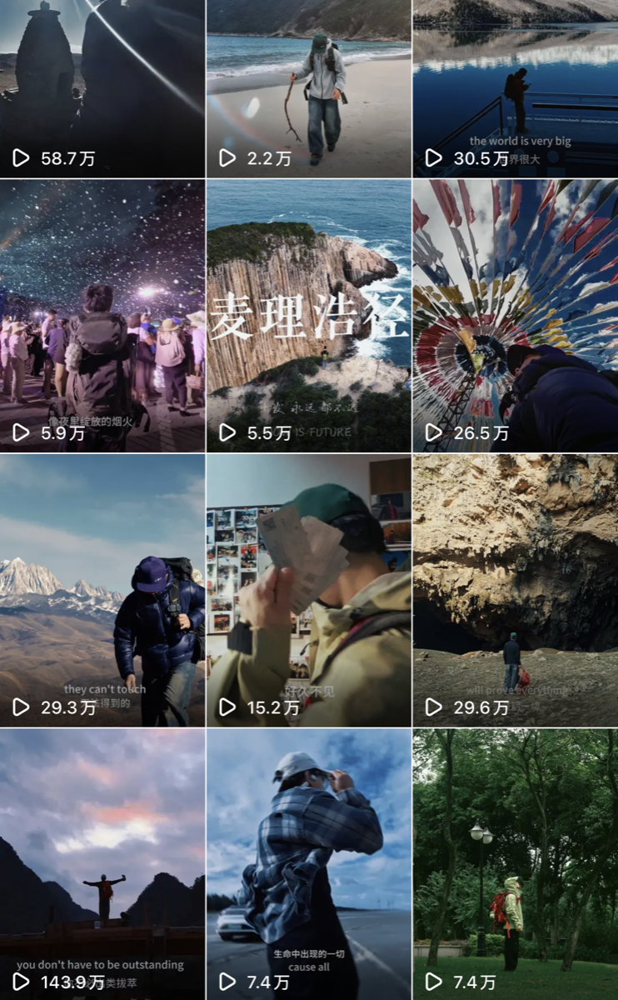

SEEM 系统工程与工程管理，2025.09 - 2026.10。
Profile
基础信息
软件工程；GPA 3.99/5，均分 89.9，专业排名 12/80。
可支持 AI 产品、增长运营、内容工具与项目协作机会。
邮箱：18486162501@163.com
微信：ayuan_wwhs / 18486162501
QQ：2174628944
电话：15623191229
Education
教育背景
2025.09 - 2026.10
香港中文大学 · 系统工程与工程管理（硕士）
主修项目技术管理、工程经济学、信息技术、金融科技、物流管理、主客系统等课程。
2021.09 - 2025.06
武汉理工大学·本科
软件工程；GPA 3.99/5，均分 89.9，专业排名 12/80；主修软件工程、计算机网络、计算机组成原理、数据结构、线性代数、数值分析等。
Timeline
实习/项目
个人经历
独立运营个人媒体账号，抖音端流量超 1000w，获赞超 100w+，个人全流程制作频道内容，具备内容策划与传播意识，与旅行赛道头部创作者合作产出内容。
持续追踪完播率、互动率等核心指标，识别高传播选题规律，优化内容结构与发布节奏，形成可复用的脚本模板与创作 SOP。
与 10+个品牌方合作定制视频内容，在有限时长内提炼品牌卖点，设计适配平台传播的脚本结构与视觉呈现方式，完成从需求沟通到内容交付的完整商务链路。
具备从用户视角定义内容需求、通过数据验证产品假设、快速迭代优化的实战经验，理解创意、分发、转化完整用户行为链路。
主动探索 AIGC 生成内容与实拍素材融合的创作方式，形成 AI 辅助＋人工创作混合内容生产流程，产出多条具有传播度的创意视频。
主导需求拆解与任务分工，推动项目按节点交付并参与比赛，具备跨角色协作与项目推进经验。
独立或协作完成 Qt 客户端、物流模拟、计费系统等工具类产品开发，具备前端（HTML/CSS/JS）与客户端（C++/Qt）双端实现能力，理解完整工程与产品交付视角，对深度学习、CV 视觉方面了解，做过传统视觉算法模型优化提升模型性能均值 1%。
Projects
项目详情
Portfolio
链接与作品展示

故事坊产品页面截图，展示从需求建档、访谈采集、AI 内容生成、家人校对到排版交付的完整用户旅程。
计划2026年7月进行内部测试与灰度测试，8月小范围上线测试。

AI 智能模拟与评估系统界面截图，展示策略决策、方向性指标、关键解释与预测报告输出。

内容策划 + 个人运营 + 品牌合作 + 数据驱动内容增长
自我评价
工程背景 × 产品思维：具备前端与客户端双端开发能力，能直接评估技术实现成本，与研发团队无沟通壁垒。
AI 产品实践：主导 AI 老年数字自传平台从 0 到 1 设计落地，具备 LLM 产品化应用与 Prompt 工程实战经验，理解 AI 产品的能力边界与用户适配。
用户增长认知：个人短视频账号累计播放量 1000 万+，通过完播率、互动率等指标持续迭代内容策略，具备数据驱动产品决策的实战感知。
0 到 1 交付经验：主导多个工具类产品从需求定义到功能上线的完整闭环，习惯用分批迭代方式在资源约束下保证核心功能按时交付。